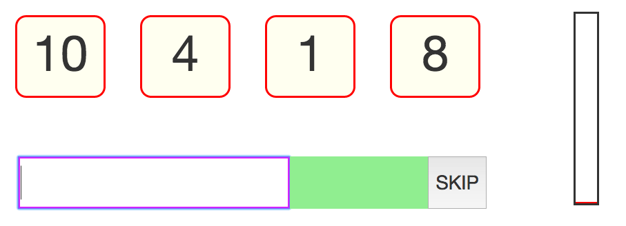
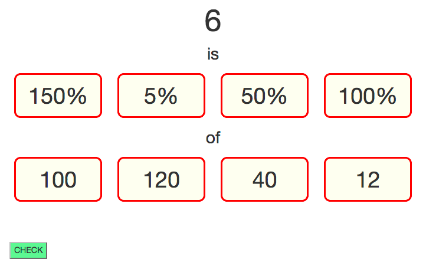
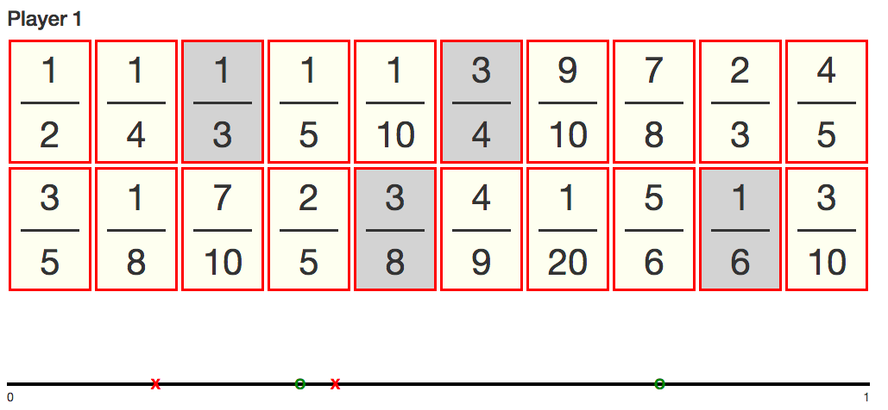
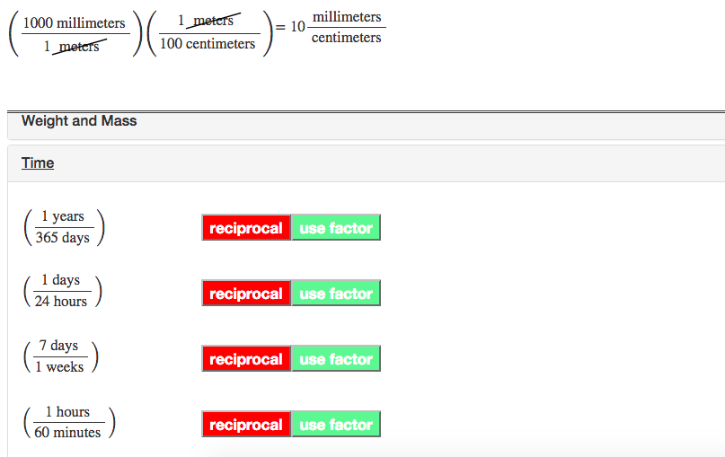

I had the privilege of serving with the Denver Math Fellows for two years. The following are computerized versions of some of the games and exercises we shared with our students. I hope that the current Math Fellows and students of Denver Public Schools will find this site useful and enjoyable.
Like the game 24, but with 12 as the goal. Not all puzzles are solvable, but think hard before you hit "skip". This game is designed to improve quick fact fluency.
Why is 50% of 80 equal to 40 and 50% of 12 equal to 6? Choose a percent and a total to get a goal number. Learn mental tricks to quickly find common percentages.
This game needs to be played with a partner. Take turns choosing fractions from a list. Your goal is to get three fractions in a row on the number line before your partner does. Build your intuition about where fractions fall on the number line.
This is currently more of a tool than a game, although a game component will be added later. Instantly see the result of multiplying conversion factors to convert units. This tool comes preloaded with commonly used conversion factors, such as feet to inches, as well as having the option of creating problem-specific conversion factors, such as how much someone gets paid per hour.
